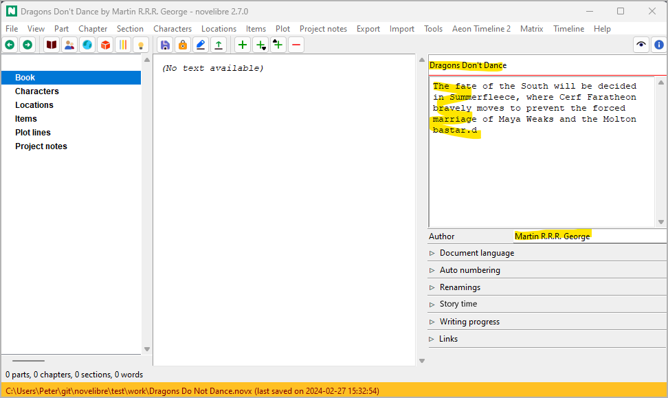
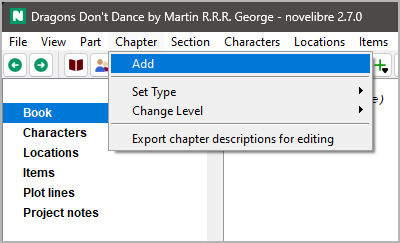
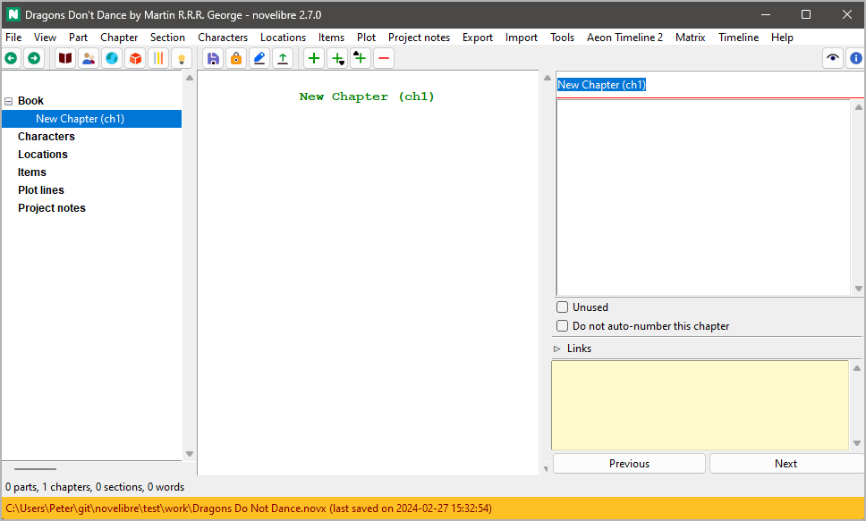
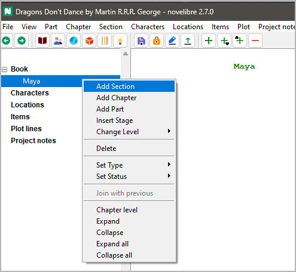

Getting started
The following are different ways of starting with novelibre. If you are starting a new novel project “from scratch”, you can create it with novelibre and build it up step by step from there. If you have already started a work and the manuscript is available as a Writer document, you can import it after appropriate preparation, and novelibre will automatically create the chapter and section structure. You can also have novelibre import an outline with the summaries of planned chapters or sections.
Hint
All of this is also available in the same or similar form in other writing programs. Alternatively, you can also create your novel outline as a timeline using programs such as Timeline or Aeon Timeline 2, or as a mind map with Scapple. Using the corresponding plugins or tools, you get a novelibre project to work on.
Starting from scratch
If you start novelibre by dragging a .novx file onto the icon, that project will be opened. Otherwise, the project from the last session will be automatically reopened, if there is one.
Let’s assume that neither is the case, for example when the program is called up for the very first time after installation. Let’s also assume that we have not yet made any preparations, i.e. we have neither a Work-in-progress nor an outline of any kind. First of all, we create a new empty project with File > New > Empty project.
A file selection dialog opens and asks for the file name and location of the new project. Unlike OpenOffice/LibreOffice, the file selection dialog is not preset to a defined document directory. If you enter a file name for your project, make sure you also select the correct project directory.
Tip
It is advisable to create a separate folder for the project, as all exported documents are also stored here. This also includes auxiliary files such as timelines or project-related configuration files for tools and plugins.
Important
Please make sure that your new project is not in the installation directory.
It is not mandatory, but we should then enter a title and the author’s name. Perhaps also a description of our idea. To get started right away, we will postpone the remaining project settings until later.
We need at least one section in order to get space to begin writing. And this must belong to a chapter. So we now create the first chapter with Chapter > Add.
After the chapter is created, novelibre sets the focus on the chapter title entry at the top of the right pane. Let’s overwrite the default title.
Hint
If you decide to have novelibre auto-number the chapters, you can skip this and keep the default chapter title.
There are several ways to add a section now. In this example, we right-click on the chapter, and select Add section.
Starting the manuscript immediately
As soon as the new section appears in the tree view, we can export a
manuscript. Just click on the  toolbar icon.
toolbar icon.
Done! Writer should now appear with the manuscript open. Just start writing your novel within the text boundary.
We can now continue working with Writer as described on the next page, creating new sections and chapters as we write.
Tip
You can now work on the manuscript document “on the seat of your pants” until it makes sense for you to transfer the whole thing back to novelibre in order to create an overview and set up your project organization there.
However, I recommend doing this at least daily at the end of your writing session and exporting a new manuscript document the next day. Then you won’t get behind with entering the section titles and content descriptions, and you will get your chapters numbered, if desired. In addition, novelibre then saves entries in the daily word count log.
Creating a chapter structure
If you prefer to make a plan first before you start writing, novelibre is the right tool for you. Then you don’t start Writer with an empty manuscript, but first create a framework of empty chapters for which you enter content information. Or you can leave it at one chapter for the time being and create empty sections in it, which you can later distribute to chapters. The results of this preliminary work can be exported as text documents in the form of synopses, e.g on chapter or section level.
Creating a dramatic structure
However, you can also start on a more abstract level and first create and describe stages like acts or steps in order to later insert the sections as scenes. For this, you first create at least one chapter. Then create your stages.
The system is described on the Plotting with novelibre page. There you also can learn how to set up multiple strands or character arcs.
Tip
With the nv_templates plugin you can have novelibre set up your new project with a pre-made structure like the “Three Act Model” or “Save The Cat”.
Creating a plot grid
If you want to outline your novel using a plot grid, you can do this with novelibre:
Create an empty new project as described above.
Add a single chapter.
Select this chapter, then add multiple sections.
If you need a number of new sections above the limit, repeat step 3. However, it is recommended to start with a few sections that are easier to distribute to the chapters to be created later. You can extend the plot grid over time.
Create the plot lines you need.
Export a plot grid and fill the table cells.
Import the plot grid.
Add more chapters and move the sections to them.
Starting with a Work-in-progress
Let’s assume that you have already written an extensive novel manuscript with Writer and now want to continue with novelibre. In this case you first make sure to set it up in a way, novelibre can recognize its parts, chapters, and sections.
Tip
It is advisable to create a separate folder for the project and move your manuscript there before importing it with novelibre.
Important
- How to set up a Work-in-progress for import
A Work-in-progress must not have any third level heading.
Heading 1 → Part title.
Heading 2 → Chapter title.
* * *→ Section divider (not needed for the first section in a chapter).All other text is considered section content.
The following picture shows a work-in-progress example. Note the blanks between the asterisks of the section divider. It is not necessary to center the section dividers.
Caution
Formatting that is not supported with novelibre is lost. The same applies to images. So if your work depends on a sophisticated layout that is beyond novelibre’s capabilities, consider using comments as reminders as you write. That will help you doing the special formatting at the end, when you prepare the finished novel for publication. If this is not enough, novelibre may not be the right tool for you.
Tip
The easiest way to create the right section dividers is by using a macro that comes with the novelibre-tools extension.
When your manuscript is ready, create your new project with File > New > Create from ODT….
A file selection dialog opens and asks for the ODT document. The new project will be created in the same directory and named after the manuscript file, but with the .novx extension.
Caution
Once your novel is imported into novelibre, your initial ODT document is no longer needed. So if you want to keep it, you best move it elsewhere, so that it is not overwritten by an exported document later on.
Tip
After importing an extensive piece of work, you may have a whole lot of sections that need to be named and described. A plot grid might be a great help for doing this.
Starting with an outline
Instead of a Work-in-progress, you also can import an outline made with Writer into novelibre to get a novel project with empty, but named and described chapters and sections. At first glance, an outline looks the same as a Work-in-progress, but it has third level headings for the sections, indicating their titles. If novelibre finds third-level headings, it considers all body text to be description. In this case, formatting doesn’t matter.
Tip
It is advisable to create a separate folder for the project and move your outline there before importing it with novelibre.
Important
- How to set up an outline for import
An outline has at least one third level heading.
Heading 1 → Part title.
Heading 2 → Chapter title.
Heading 3 → Section title.
All other text is considered to be chapter/section description.
The following picture shows an outline example. The body text just below the chapter heading is the chapter description; the body text just below the section heading is the section description. However, the descriptions are optional.
When your outline is ready, create your new project with File > New > Create from ODT….
A file selection dialog opens and asks for the ODT document. The new project will be created in the same directory and named after the outline file, but with the .novx extension.
Caution
Once your outline is imported into novelibre, your initial ODT document is no longer needed. So if you want to keep it, you best move it elsewhere, so that it is not overwritten by an exported document later on.
You can export and import the current outline at any time as “Descriptions” separated by parts, chapters and sections.